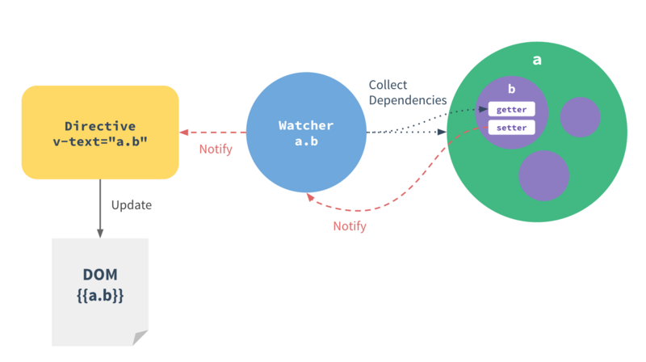

2.脏值检测
通过对比数据是否有变更,来决定是否更新视图。最简单的可以通过定时轮询去检测数据的变动。Angular只有在指定时间触发时进入脏值检测：
· DOM事件,比如用户输入文本点击按钮等(ng-click)
· XHR相应事件
· 浏览器location变更
· Timer事件
· 执行$digidt()或$apply()
3.数据劫持
· DOM事件,比如用户输入文本点击按钮等(ng-click)
· XHR相应事件
· 浏览器location变更
· Timer事件
· 执行$digidt()或$apply()
双向绑定原理说明图 :

原理图告诉我们，a对象下面的b属性定义了getter、setter对属性进行劫持，当属性值改变是就会notify通知watch对象，而watch对象则会notify到view上对应的位置进行更新（这个地方还没讲清下面再讲），然后我们就看到了视图的更新了，反过来当在视图(如input)输入数据时，也会触发订阅者watch，更新最新的数据到data里面(图中的a.b),这样model数据就能实时响应view上的数据变化了，这样一个过程就是数据的双向绑定了。
Vue.js用的是数据劫持+发布/订阅模式,通过object.defineProperty()来劫持各个属性的setter/getter，在数据变动时发布消息给订阅者（Watcher），触发相应的监听回调。
Vue.js用的是数据劫持+发布/订阅模式,通过object.defineProperty()来劫持各个属性的setter/getter，在数据变动时发布消息给订阅者（Watcher），触发相应的监听回调。